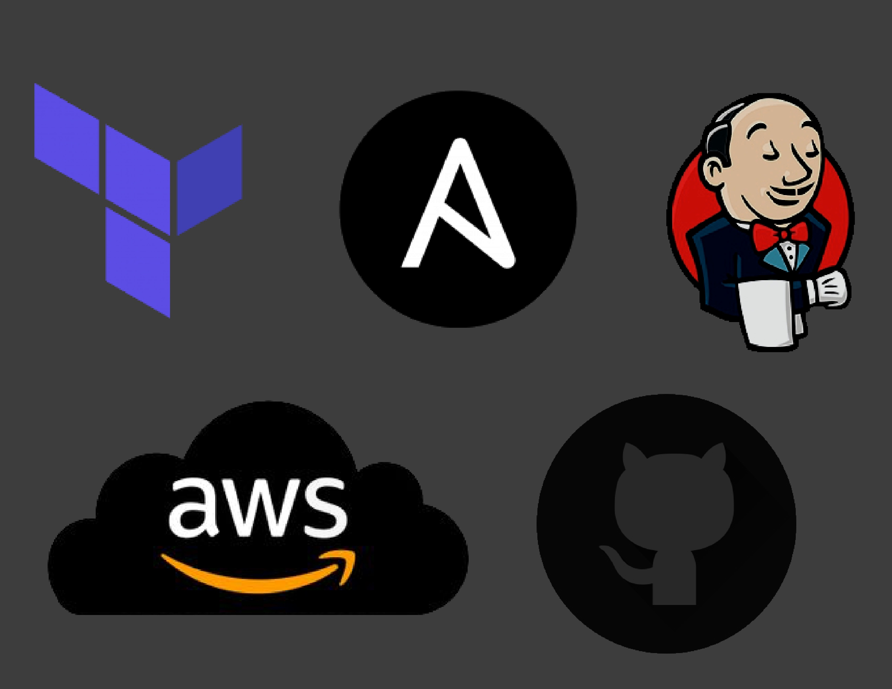
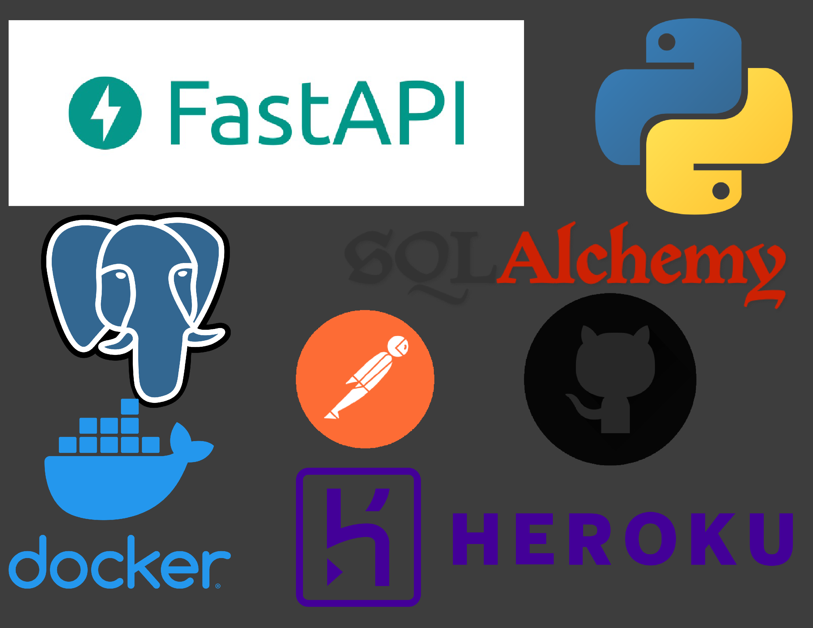
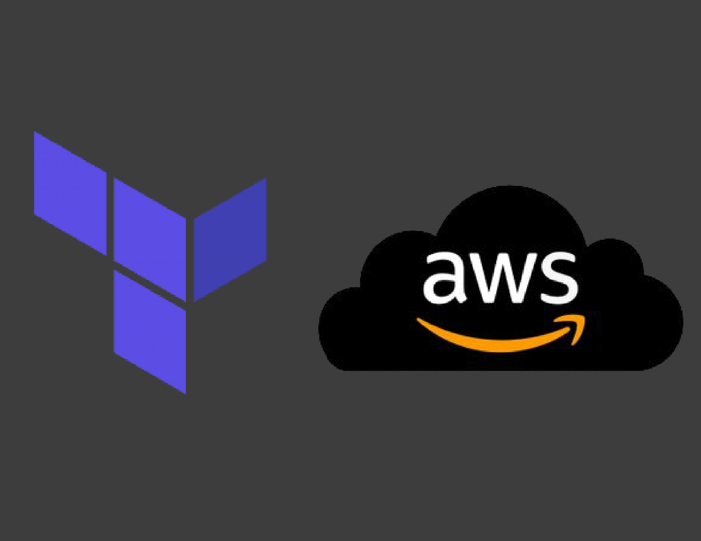
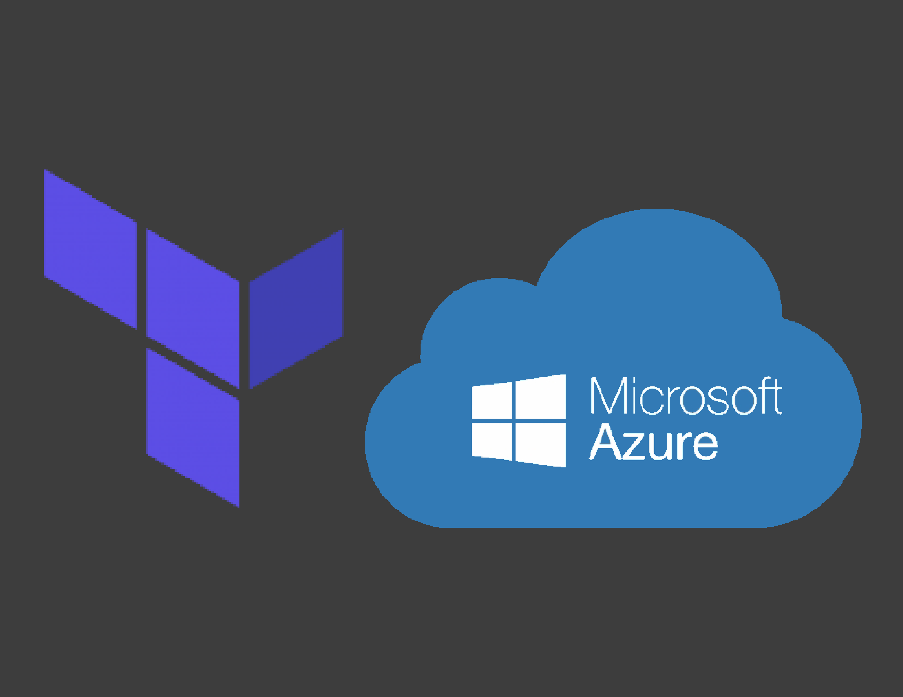

In this project I used 3 of the most popular DevOps tools to deploy a observability stack using Grafana and Prometheus running on EC2 (Ubuntu Server 20.04 LTS) instances deployed in AWS using Terraform, configuration management with Ansible playbooks; furthermore, pushing and storing my updated code to GitHub, and then pushing my code to Jenkins; to automate the entire process using a Jenkinsfile.

In this project I developed and built a full-fledged social media-like API in Python using FastAPI. This project encompasses the fundamentals and advanced topics of API design including routes, serialization/deserialization, schema validation, models, SQL, ORM (SqlAlchemy) testing with pytest, and building out a CI/CD pipeline using GitHub actions.


This is a foundations project that shows the fundamentals of designing and deploying IaC using Terraform and AWS.

This is a foundations project that shows the fundamentals of designing and deploying IaC using Terraform and Azure.
Project 1 shows a Powershell script that demonstrates prompt mechanics.
Project 2 shows a Powershell script that restores Active Directory OU's and reconfigures Microsoft's SQL Server 2019.
This project demostrates a cloud-based solution to Satellites Ads Inc. (WGU Fake Company) for the advertising demand associated with the next generation of space advertisement satellites.